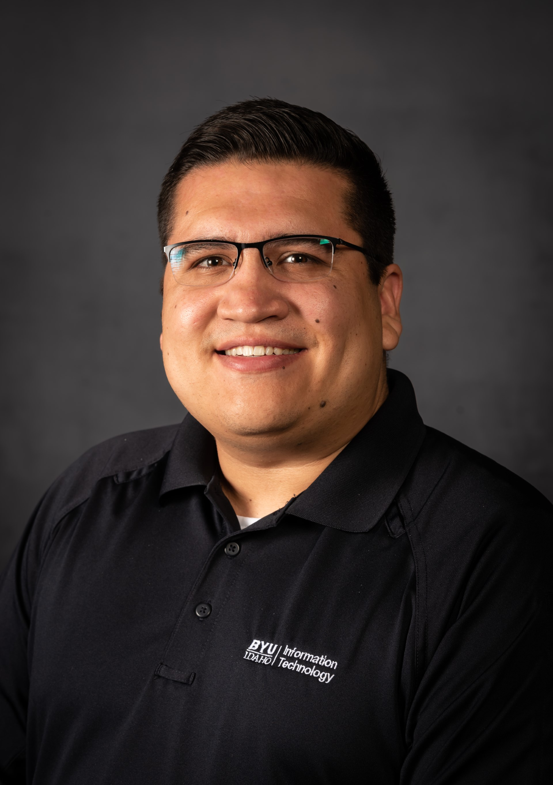

Thank you for visiting my professional hub! My name is Tomas Gutierrez. A detailed summary of my abilities, accomplishments, education, and experiences are found here. I'm hoping to succeed in the exciting world of cyber security. Please review my résumé, look over my accomplishments, and see how my special combination of experience and enthusiasm will benefit your team. Together, let's set out on a path to achieve success for both of us.
Address: Rexburg, ID, 83440
Phone: 623.236.6584
E-mail: tomasvg18@gmail.com
Welcome
Thank you for visiting my professional hub! My name is Tomas Gutierrez. A detailed summary of my abilities, accomplishments, education, and experiences are found here. I'm hoping to succeed in the exciting world of cyber security. Please review my résumé, look over my accomplishments, and see how my special combination of experience and enthusiasm will benefit your team. Together, let's set out on a path to achieve success for both of us.
Contact Info
Tomas GutierrezAddress: Rexburg, ID, 83440
Phone: 623.236.6584
E-mail: tomasvg18@gmail.com
Introduction
A proven and recognized professional with skilled client interaction and an emphasis on providing superior customer service. Proven to work closely with coworkers for effective data management. Skilled in document digitization, office modernization and data organization for enhanced productivity.Work History
BRIGHAM YOUNG UNIVERSITY, Rexburg, ID
• Managed a large team performing complex tasks related to Information Technology.
• Interacted and communicated with an array of different kinds of users, understanding their needs and how best to handle their requests.
2019-10 – 2023-3 - Dental Assistant
KIDZ-R-KOOL PEDIATRIC DENTISTRY, Phoenix, AZ • Educates patients by giving oral hygiene, plaque control and postoperative instructions. • Performs general chair-side duties for general dentistry, endo procedures and oral surgery. • Provides diagnostic information by exposing and developing radiographic studies.
2017-07 - 2019-07 - Sales and Management
BKB ENTERPRISES, Phoenix, AZ • Assisted owner with operational oversight, business development and process improvement strategies. • Organized projects and contests to increase sales and encourage exceptional customer service.